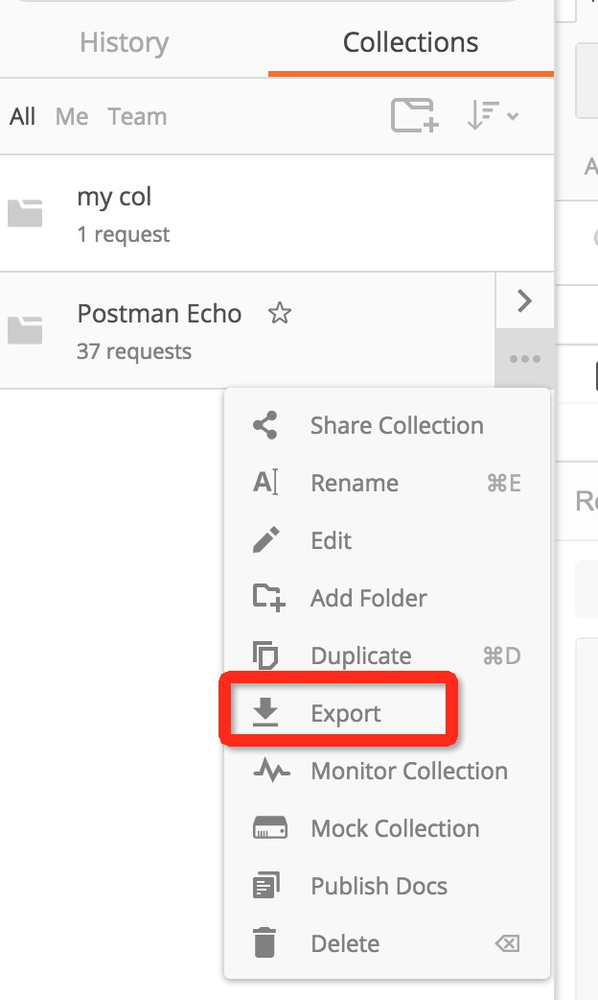

<!DOCTYPE html>
<html lang="zh-CN">

<head>
    <title>YApi 接口管理平台 使用手册</title>
    
        <meta name="keywords" content="api管理,接口管理,接口文档,api文档">
    
    
        <meta name="description" content="YApi 是高效、易用、功能强大的 api 管理平台，旨在为开发、产品、测试人员提供更优雅的接口管理服务。可以帮助开发者轻松创建、发布、维护 API，YApi 还为用户提供了优秀的交互体验，开发人员只需利用平台提供的接口数据写入工具以及简单的点击操作就可以实现接口的管理。">
    

    <link rel="shortcut icon" href="./images/favicon.ico" />
    <link rel="stylesheet" href="source/main.css" />
    
    
      
      <link rel="stylesheet" href="styles/theme.css" />
      
    
    <meta charset="UTF-8">
    <meta name="viewport" content="width=device-width,minimum-scale=1.0,maximum-scale=1.0,user-scalable=no" />
    <meta name="format-detection" content="telephone=no,email=no" />
    <meta http-equiv="X-UA-Compatible" content="ie=edge, chrome=1">
</head>
<body>
    <div class="ydoc">
        <header class="ydoc-header">
            <div class="ydoc-header-area">
                
                <a href="./index.html" class="navbar-brand"> &nbsp;YAPI</a>
                
                <button class="ydocIcon navbar-toggle">&#xf020;</button>
                <nav class="ydoc-nav">
                    <ul class="navbar-left">
                         
                        <li class="">
                            
                            <a href="index.html"></a> 
                        </li>
                        
                        <li class="active">
                            
                            <a href="usage.html">使用手册</a> 
                        </li>
                        
                        <li class="">
                            
                            <a href="devops.html">内网部署</a> 
                        </li>
                        
                        <li class="">
                            
                            <a href="plugin.html">插件 Wiki</a> 
                        </li>
                        
                        <li class="">
                            
                            <a href="qa.html">常见问题</a> 
                        </li>
                        
                        <li class="">
                            
                            <a href="releases.html">版本记录</a> 
                        </li>
                        
                        <li class="">
                            
                            <a href="http://yapi.demo.qunar.com/" target="_blank">demo 站点</a> 
                        </li>
                        
                        <li class="">
                            
                            <a href="api.html"></a> 
                        </li>
                         
                    </ul>
                </nav>
            </div>
        </header>
        
        <!-- <header style="height:20px"></header> -->
        
        <!-- Docs page layout -->
        
        <div class="ydoc-banner-bg">
            <div class="ydoc-banner ">
                <div class="ydoc-banner-area">
                    <h1 >YApi</h1>
                    <p class="desc ">高效、易用、功能强大的api管理平台，旨在为开发、产品、测试人员提供更优雅的接口管理服务。</p>
                    
                </div>
            </div>
            

            <div class="ydoc-container">
                 
                <div class="ydoc-container-content ">
                    
                    
                    <div class="content-left staticsidenav" role="complementary">
                        <nav class="docs-sidebar hidden-print hidden-xs hidden-sm">
                            <ul class="nav docs-sidenav">
                                 
                                <!-- <li  > -->
                                <li >
                                    
                                    <a href="getfamiliar.html">认识 YApi</a> 
                                </li>
                                  
                                <!-- <li  > -->
                                <li >
                                    
                                    <a href="quickstart.html">创建第一个API</a> 
                                </li>
                                  
                                <!-- <li  > -->
                                <li >
                                    
                                    <a href="manage.html">管理分组与项目</a> 
                                </li>
                                  
                                <!-- <li  > -->
                                <li >
                                    
                                    <a href="project.html">项目操作</a> 
                                </li>
                                  
                                <!-- <li  > -->
                                <li >
                                    
                                    <a href="interface.html">接口操作</a> 
                                </li>
                                  
                                <!-- <li  > -->
                                <li >
                                    
                                    <a href="mock.html">普通 Mock</a> 
                                </li>
                                  
                                <!-- <li  > -->
                                <li >
                                    
                                    <a href="adv_mock.html">高级 Mock</a> 
                                </li>
                                  
                                <!-- <li  > -->
                                <li >
                                    
                                    <a href="case.html">使用测试集</a> 
                                </li>
                                  
                                <!-- <li  class="active"   class="active" > -->
                                <li  class="active" >
                                    
                                    <a href="data.html">数据导入</a> 
                                </li>
                                   
                                <ul class="nav docs-sidenav-extend"  >
                                
                                    <li >
                                        <a href="#介绍">介绍</a>
                                    </li>
                                     
                                    <li >
                                        <a href="#Postman_数据导入">Postman 数据导入</a>
                                    </li>
                                     
                                    <li >
                                        <a href="#HAR_数据导入">HAR 数据导入</a>
                                    </li>
                                     
                                    <li >
                                        <a href="#Swagger_数据导入">Swagger 数据导入</a>
                                    </li>
                                 
                                </ul>
                                  
                            </ul>
                        </nav>
                    </div>
                    
                    <div class="content-right markdown-body use-sidebar" role="main">

                         <h2 class="subject" id="介绍">介绍 <a class="hashlink" href="#介绍">#</a></h2><p >在数据管理可快速导入其他格式的接口数据，方便快速添加接口。</p>

<h2 class="subject" id="Postman_数据导入">Postman 数据导入 <a class="hashlink" href="#Postman_数据导入">#</a></h2><p>1.首先在postman导出接口</p>
<div></div>

<p>2.选择collection_v1,点击export导出接口到文件xxx</p>
<div></div>

<p>3.打开yapi平台，进入到项目页面，点击数据管理，选择相应的分组和postman导入方式，选择刚才保存的文件路径，开始导入数据</p>
<div></div>

<h2 class="subject" id="HAR_数据导入">HAR 数据导入 <a class="hashlink" href="#HAR_数据导入">#</a></h2><p>可用 chrome 实现录制接口数据的功能，方便开发者快速导入项目接口</p>

<p>1.打开 Chrome 浏览器开发者工具，点击network，首次使用请先clear所有请求信息，确保录制功能开启（红色为开启状态）</p>
<div></div>

<p>2.操作页面实际功能，完成后点击save as HAR with content,将数据保存到文件xxx</p>
<div></div>

<p>3.打开yapi平台，进入到项目页面，点击数据管理，选择相应的分组和har导入方式，选择刚才保存的文件路径，开始导入数据</p>
<div></div>

<h2 class="subject" id="Swagger_数据导入">Swagger 数据导入 <a class="hashlink" href="#Swagger_数据导入">#</a></h2><p><p>什么是 Swagger ？</p></p>
<div><a href="https://www.gitbook.com/book/huangwenchao/swagger/details">Swagger从入门到精通</a></div>

<p><br />
1.生成 JSON 语言编写的 Swagger API 文档文件<div>  例如这样的数据 （<a href="http://petstore.swagger.io/v2/swagger.json" target="blank">http://petstore.swagger.io/v2/swagger.json</a>），可以将其内容复制到 JSON 文件中。</div></p>
<p>2.打开yapi平台，进入到项目页面，点击数据管理，选择相应的分组和swagger导入方式，选择刚才的文件，开始导入数据</p>
<div></div>

<div></div>

<div></div>
                    </div>
                </div>
                 
            </div>
            
        </div>
        
        <footer class="footer">
            <div class="copyright">
                &copy; 2017 <a href="https://ymfe.org">YMFE</a> Team. Build by <a href="http://ued.qunar.com/ydoc/">ydoc</a>&nbsp;
            </div>
        </footer>
    </div>

    
    <div class="open-panel"></div>
    <div class="mask"></div>
     

    <script src="source/main.js"></script>
    <script src="source/app.js"></script>
        

    </body>

</html>
